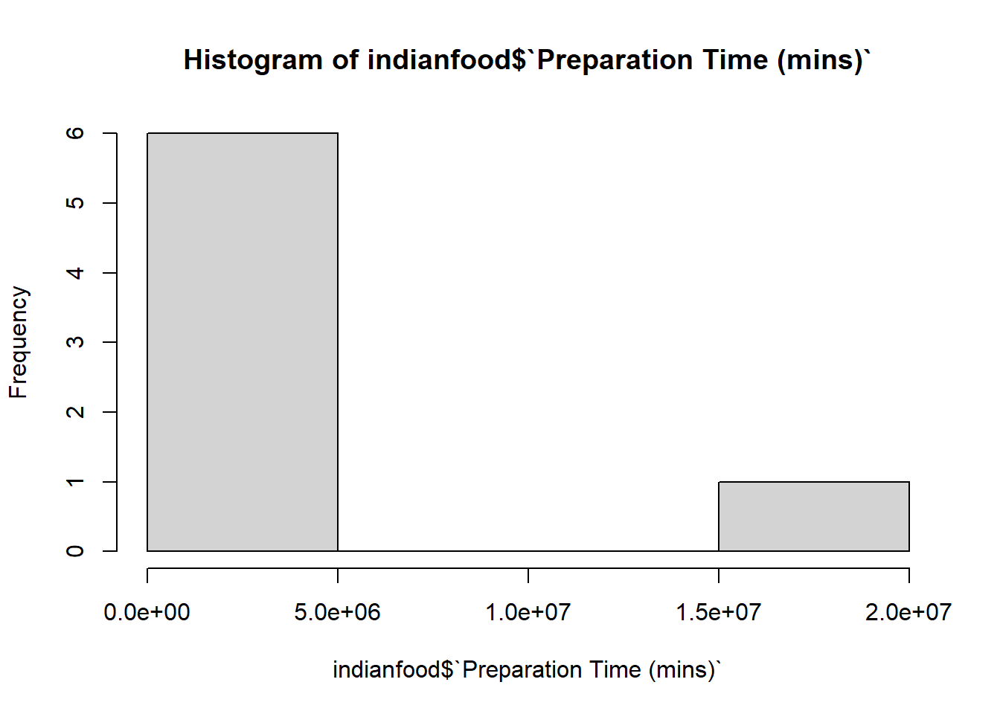

indianfood <- data.frame(name = c("Boondi",
"Gajar ka halwa",
"Ghevar",
"Kalakand",
"Misti Doi",
"Aloo tikki",
"Chicken tikka masala"),
ingredients = c("Maida flour, yogurt, oil, sugar",
"Carots, milk, sugar, ghee, cashews, raisins",
"Flour, ghee, kewra, milk, clarified butter, sugar, almonds, pistachio, saffron, green cardimom",
"Milk, cottage cheese, sugar",
"Milk, jaggery",
"Rice flour, potatoe, bread crumbs, garam masalaaaa, salt",
"Naan bread, tomato sauce, skinless chicken breasts, heavy cream, garam masala"),
prep_time = c(45,
15,
15,
20,
480,
5,
15020240),
state = c("West Bengal",
"Punjab",
"Rajasthan",
"West Bengal",
"West Bengal",
"Punjab",
"Punjab")
)Appendix E — Answers for Section 7.7
The following are answers to the exercises in Section 7.7.
Let’s create a dataframe with the following code:
Next, let’s fix some errors and make some changes!
- First, let’s create some more descriptive variable names. Change the existing variables names to Name, Ingredients, Preparation Time (mins), and Origin (state). Then, print the names of the dataframe.
newnames <- c("Name", "Ingredients", "Preparation Time (mins)", "Origin (state)")
names(indianfood) <- newnames
names(indianfood)[1] "Name" "Ingredients"
[3] "Preparation Time (mins)" "Origin (state)" - Next, having read through the ingredients, we can see various typos that should be fixed. Go ahead and fix the spelling mistakes (typos) you see in the
Ingredientscolumn. Hint: there are four spelling mistakes in theIngredientscolumn, and we are using standard American English for spelling.
# I see typos in Rows 2, 3, and 6. In row 2, carrot is spelled incorrectly. In row 3, cardamom is spelled incorrectly. In row 6, potato and masala are spelled incorrectly.
indianfood[2,2] <- "Carrots, milk, sugar, ghee, cashews, raisins"
indianfood[3,2] <- "Flour, ghee, kewra, milk, clarified butter, sugar, almonds, pistachio, saffron, green cardamom"
indianfood[6,2] <- "Rice flour, potato, bread crumbs, garam masala, salt"- I see that the ingredients list has the terms “cottage cheese”, “clarified butter”, and “naan bread.” Substitute paneer for “cottage cheese” and remove “clarified butter” since there is already ‘ghee’ in the same row, which is pretty much the same thing. Also, remove ‘bread’ from “Naan bread”, since that is unnecessary. Then print the
Ingredientscolumn.
indianfood$Ingredients <- gsub("cottage cheese", "paneer", indianfood$Ingredients)
indianfood$Ingredients <- gsub(" clarified butter,", " ", indianfood$Ingredients)
indianfood$Ingredients <- gsub("Naan bread", "Naan", indianfood$Ingredients)
print(indianfood$Ingredients)[1] "Maida flour, yogurt, oil, sugar"
[2] "Carrots, milk, sugar, ghee, cashews, raisins"
[3] "Flour, ghee, kewra, milk, sugar, almonds, pistachio, saffron, green cardamom"
[4] "Milk, paneer, sugar"
[5] "Milk, jaggery"
[6] "Rice flour, potato, bread crumbs, garam masala, salt"
[7] "Naan, tomato sauce, skinless chicken breasts, heavy cream, garam masala" - Let’s check the class of the
Origin (state)variable. If it is not already in factor class, go ahead and convert it to factor. Make sure to save the new factor-classed variable back in the dataset. Then, check the class of the variable again to make sure it is factor.
# Check the class of the Origin (state) variable.
class(indianfood$`Origin (state)`)[1] "character"# It's currently in character class, so let's make it factor.
indianfood$`Origin (state)` <- as.factor(indianfood$`Origin (state)`)
# Let's check the new class.
class(indianfood$`Origin (state)`)[1] "factor"- Next, let’s add some variable labels to each variable. The variable labels can say whatever you think might be helpful. In general, think of some description that will provide context if you are looking at these data for the first time. Then, do something to check if it worked. Hint: you’ve seen two ways to do this.
library(expss)
indianfood <- apply_labels(indianfood,
Name = "Name of the Indian dish",
Ingredients = "Required components to make the Indian dish",
"Preparation Time (mins)" = "The time in minutes it takes to prepare to cook the Indian dish",
"Origin (state)" = "The provenance of the Indian dish by state.")
str(indianfood) # you can also View(indianfood) to see the variable labels under the variable names.'data.frame': 7 obs. of 4 variables:
$ Name :Class 'labelled' chr "Boondi" "Gajar ka halwa" "Ghevar" "Kalakand" ...
.. .. LABEL: Name of the Indian dish
$ Ingredients :Class 'labelled' chr "Maida flour, yogurt, oil, sugar" "Carrots, milk, sugar, ghee, cashews, raisins" "Flour, ghee, kewra, milk, sugar, almonds, pistachio, saffron, green cardamom" "Milk, paneer, sugar" ...
.. .. LABEL: Required components to make the Indian dish
$ Preparation Time (mins):Class 'labelled' num 45 15 15 20 480 ...
.. .. LABEL: The time in minutes it takes to prepare to cook the Indian dish
$ Origin (state) :Class 'labelled' Factor w/ 3 levels "Punjab","Rajasthan",..: 3 1 2 3 3 1 1
.. .. LABEL: The provenance of the Indian dish by state. - Finally, let’s have a look at the
Preparation Time (mins)variable to detect any outliers. Print the range of values and produce a histogram of this variable. Are any values seemingly outliers from the histogram?
# Look at the range of the values.
range(indianfood$`Preparation Time (mins)`)[1] 5 15020240# Alright, the highest value is definitely suspect. Let's look at the histogram.
hist(indianfood$`Preparation Time (mins)`)
# The value 15020240 definitely seems like an outlier because it is SO far away from the other values.- If you detected an outlier in the previous question (and I hope that you did!), explain your decision as to remove it or retain it in the dataframe. If you choose to remove the outlier value, replace it with a more plausible value derived from a quick Google search. Then, print the variable.
# Though you don't need to do this since we already see that 15020240 is way beyond the IQR, you can look at a boxplot or using the rstatix's package's identify_outliers function to check this as well.
library(rstatix)
library(dplyr)
indianfoodoutliers <- indianfood %>%
identify_outliers(`Preparation Time (mins)`)
# If you want to see the actual row with the outlier, you can run View(indianfoodoutliers).
# Does a value of 15020240 minutes make sense as the preparation time for chicken tikka masala. First, how long is that value in hours?
15020240 / 60[1] 250337.3## Ok, so it equates to 250,337.3 hours. This seems obviously false. Just to be sure, I Googled chicken tikka masala recipes and see that the preparation time is 20 minutes. Thus, this value is an outlier in that it is illogical and likely a data entry error. I will replace it with 20 minutes.
# Find the row number corresponding to the outlying value.
which(indianfood$`Preparation Time (mins)` == 15020240)[1] 7# Now, change the value for Preparation Time (mins) in row 7 to 20, and check that it worked.
indianfood[7, 3] <- 20
print(indianfood$`Preparation Time (mins)`)LABEL: The time in minutes it takes to prepare to cook the Indian dish
VALUES:
45, 15, 15, 20, 480, 5, 20- Finally, save your cleaned
indianfooddataframe as an R data file as well as a CSV file using the file name of your choice.
# Save as an R Data file
save(indianfood, file = "indianfood.Rdata")
# Save as a CSV file
write.csv(indianfood, "indianfood.csv", row.names = FALSE)